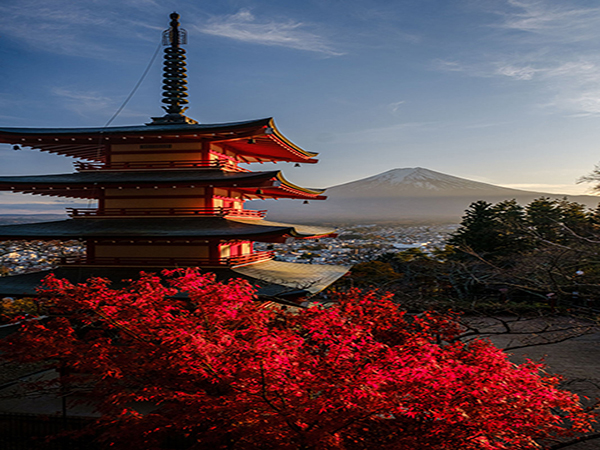
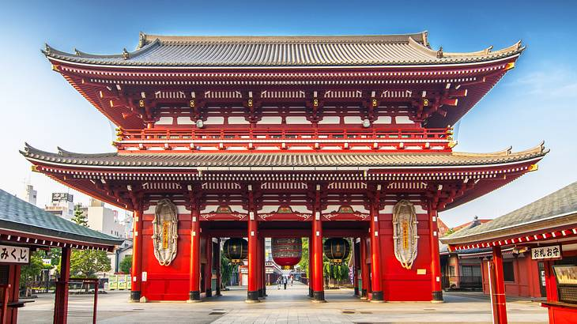

WHO ARE WE?
In 2014 and 2015, we spent 13 months traveling around the world. During our 87,000 mile journey, we traveled through Europe, southern Africa, Asia, Southeast Asia, Australia, and New Zealand. It was the adventure of a lifetime.
After our around the world trip, we bought a house and settled down. We balanced work, school, and a handful of extracurricular activities with travel and the work of running this website. Our website has done so well that both Tim and I were able to quit our jobs and focus on running this website full time. To be able to do this is a gift that we are thankful for every day.
HOW WE CAN HELP YOU
What started off as a small travel blog to keep friends and families up-to-date on our travels has grown into something much bigger.Now, we get over 1 million visitors to our website each month, making us one of the highest traffic blogs on the internet.
We plan and pay for all of our travel. No free rides from tourism boards, no free tours, no free hotel stays.
Some travel bloggers would say that we are crazy, but since we plan and pay for our travels, we know exactly what it is like for you to plan your trip.
We plan and pay for all of our travel. No free rides from tourism boards, no free tours, no free hotel stays.
Some travel bloggers would say that we are crazy, but since we plan and pay for our travels, we know exactly what it is like for you to plan your trip.

Different species of trees also start changing color at different times and can be as strikingly different as bright yellow gingkos and intensely red maples. All in all, this means that you can get many more opportunities to photograph fall foliage (or momiji in Japanese, meaning “read leaves”) than you can to photograph cherry blossoms. Crowds can also be thinner, even though the momiji season is very popular with the Japanese and the most popular and easily reachable spots can be very crowded.

Sensoji (浅草寺, Sensōji, also known as Asakusa Kannon Temple) is a Buddhist temple located in Asakusa. It is one of Tokyo's most colorful and popular temples.
The legend says that in the year 628, two brothers fished a statue of Kannon, the goddess of mercy, out of the Sumida River, and even though they put the statue back into the river, it always returned to them. Consequently, Sensoji was built nearby for the goddess of Kannon. The temple was completed in 645, making it Tokyo's oldest temple.
Copyright©2024 |World of Travel Photography|